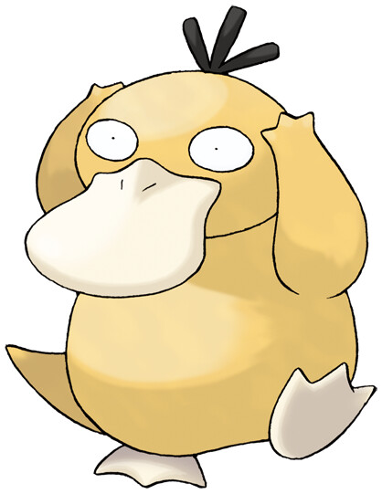

Slowpoke
Slowpoke es un Pokémon de tipo Agua y Psíquico. Es muy tranquilo y suele pasar la mayor parte del tiempo flotando en el agua sin preocuparse por nada. Tiene una cola que puede emitir ondas lentas para calmar a otros.

Psyduck es un Pokémon de tipo Agua. Es conocido por su constante dolor de cabeza y la posibilidad de desatar un poderoso ataque cuando le duele demasiado la cabeza.
Slowpoke es un Pokémon de tipo Agua y Psíquico. Es muy tranquilo y suele pasar la mayor parte del tiempo flotando en el agua sin preocuparse por nada. Tiene una cola que puede emitir ondas lentas para calmar a otros.